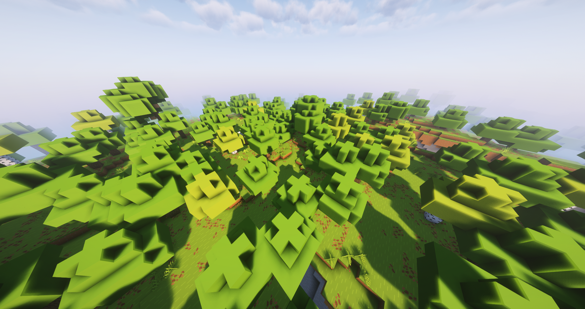
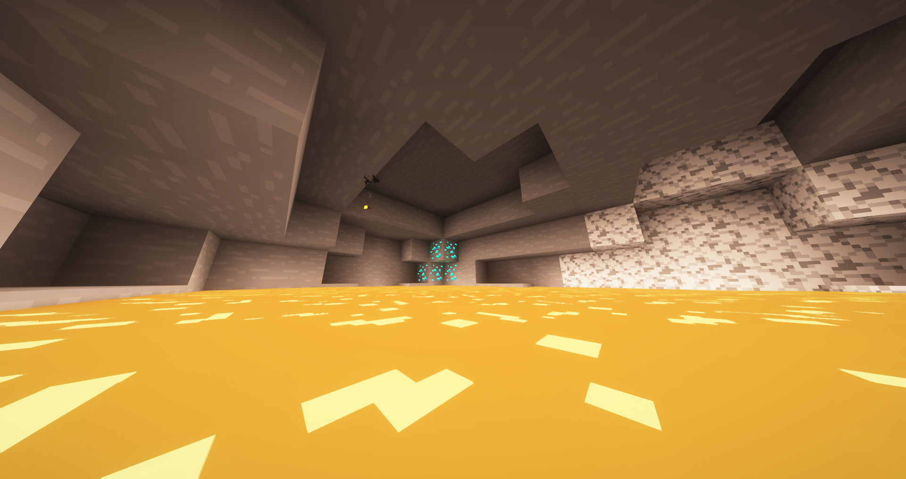
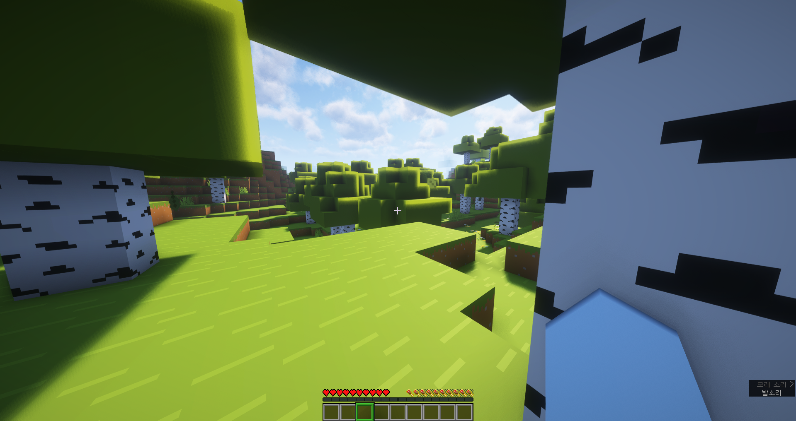

Speedcraft는 최적화에 중점을 둔 마인크래프트 모드팩입니다. 렉 없이 쾌적한 플레이가 가능하며, 다양한 모드를 효율적으로 구성했습니다.
테스트 PC: CPU: RYZEN 5 5000U, 12GB RAM, Wi-Fi:Realtek 8822CE Wireless LAN 802.11ac PCI-E NIC, AMD RADEON GRAPHICS GPU
  아래 버튼을 클릭하여 원하는 버전의 Speedcraft 모드팩을 다운로드하세요.
📦 모드팩 버전 2.0.0 게임 버전 1.21.5 📦 모드팩 버전 1.1.3게임 버전 1.21.4 📦 모드팩 버전 1.1.2 게임 버전 1.21.4 📦 모드팩 버전 1.1.1 게임 버전 1.21.4 📦 모드팩 버전 1.0.1 게임 버전 1.21.4 📦 모드팩 버전 1.0.0 게임 버전 1.21.4